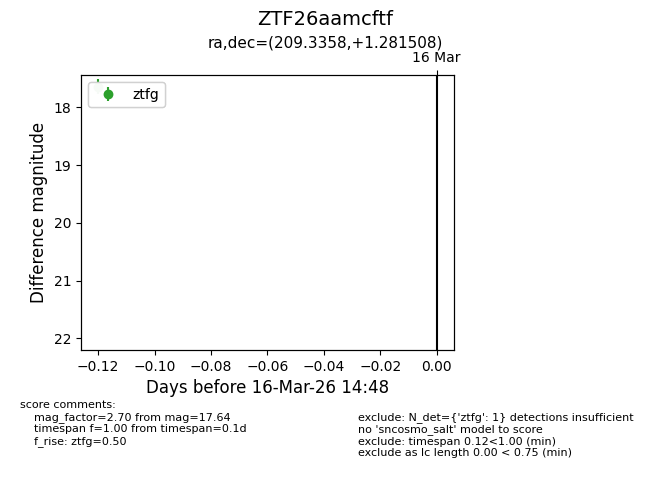
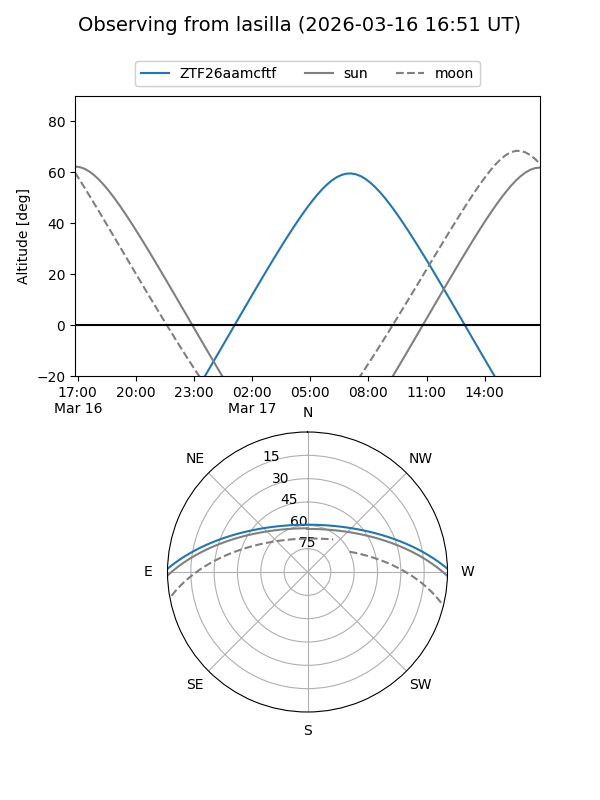
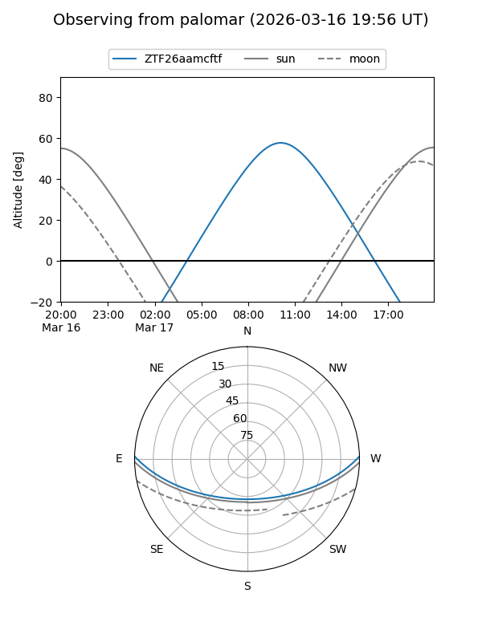

ZTF26aamcftf
Target ZTF26aamcftf at 2026-03-16 14:50
Aliases and brokers:
FINK: link
Lasair: link
ALeRCE: link
alt names
ZTF26aamcftf (ztf,fink_ztf)
Coordinates:
equatorial (ra, dec) = 209.3358,+1.28151
equatorial (HMS+DMS) = 13:57:20.58,+01:16:53.43
galactic (l, b) = (337.1307,+59.70359)
Flags:
Photometry:
last ztfg=17.64
1 ztfg detections
Lightcurve

Visibility


Additional plots